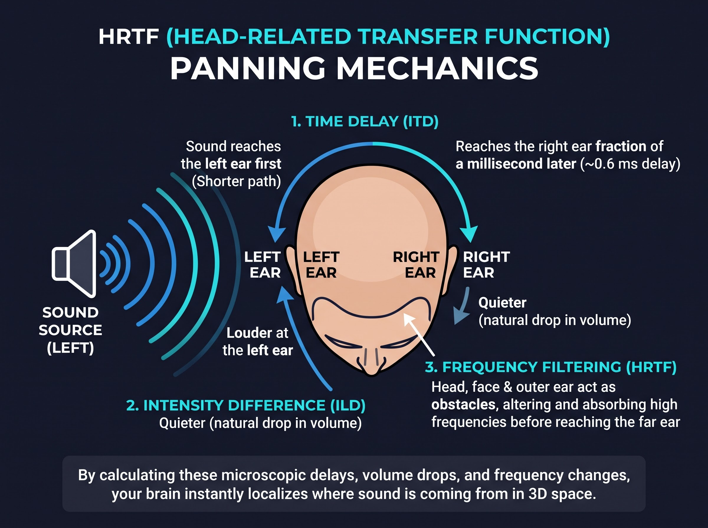

If you have spent any time browsing music on YouTube, TikTok, or Spotify over the past few years, you have undoubtedly stumbled across tracks labeled as "8D Audio." The instructions in the description are always the same: Put on your headphones, close your eyes, and listen.
The moment you hit play, the music doesn't just play inside your ears; it feels like it is physically orbiting your head. The sound travels from your left ear, wraps around the back of your skull, moves to your right ear, and even seems to float above you. It feels like absolute magic. But what exactly is 8D audio, and how does a standard pair of two-channel headphones create such a convincing 360-degree illusion?
Demystifying "8D": It's Not Actually Eight Dimensions
First, let's clear up a major misconception: 8D audio does not exist in eight dimensions. In fact, from a physics standpoint, we live in a 3D world, and human hearing is strictly three-dimensional. The term "8D" is simply a viral marketing buzzword created to make the experience sound futuristic.
In the professional audio engineering world, this effect is contemplation known as Spatial Audio, 3D Audio, or Binaural Panning. The technique is created by taking a standard stereo track and applying specialized Digital Signal Processing (DSP) algorithms that mimic how sound behaves in the real world before it reaches your eardrums.
The Secret Weapon: Psychoacoustics and HRTF
To trick the brain into thinking a sound is coming from outside your headphones, audio engineers rely on a scientific field called psychoacoustics (the study of how the brain perceives sound). The core technology powering the 8D illusion is an algorithm based on the Head-Related Transfer Function (HRTF).
In the real world, if a dog barks to your far left, your brain calculates the exact location of the dog using three microscopic biological cues:
- Interaural Time Difference (ITD): Because the dog is on your left, the sound waves hit your left eardrum a fraction of a millisecond before they reach your right eardrum.
- Interaural Level Difference (ILD): The sound is naturally louder in your left ear. Your physical head acts as an acoustic shadow, blocking some of the volume from reaching your right ear.
- Frequency Filtering (Pinna Effect): The unique shape of your outer ear (the pinna) and your shoulders absorb and reflect certain high frequencies depending on whether the sound is coming from the front, back, above, or below.

How Software Tricks Your Brain
When engineers create an 8D track, they don't just pan the volume from left to right. Instead, they run the music through software (like an HRTF panner) that artificially applies these exact ITD, ILD, and frequency filtering cues to the audio file.
When you listen to this processed track through headphones, your brain immediately recognizes these microscopic delays and volume drops. Your brain subconsciously calculates: "The high frequencies are slightly muffled and there is a 0.5-millisecond delay in the right ear. Therefore, the singer must be standing exactly three feet behind my left shoulder." You aren't just hearing the music; your brain is actively hallucinating a physical space.
FAQ: Do I need special or expensive headphones to hear 8D Audio?
No! That is the beauty of binaural processing. Because all the complex HRTF math is baked directly into the audio file itself, you do not need surround sound or "gaming" headsets. Any standard, cheap pair of stereo earphones (as long as they have a left and right channel) will deliver the full 8D experience perfectly.
FAQ: Are 8D sounds dangerous to your brain or hearing?
Not at all. 8D audio is just regular sound waves manipulated using standard equalization and delays. It does not alter your brainwaves or cause neurological damage. However, just like any music, listening to 8D tracks at maximum volume for extended periods can cause standard hearing damage (Tinnitus). Always listen at a safe, comfortable volume.


Leave A Reply